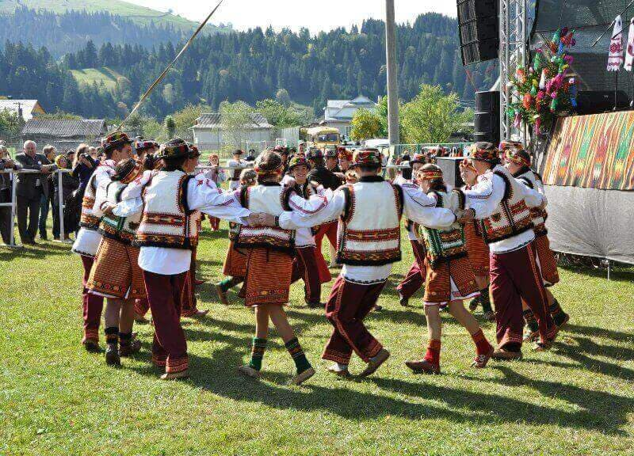

The Carpathian Mountains
The Carpathian Mountains — the place where you go skiing in winter and hiking in summer. A place you should jump at the chance to visit when the opportunity presents itself
THE Ukrainian Carpathians
The Ukrainian Carpathians are a section of the Eastern Carpathians, within the borders of modern Ukraine. They are located in the southwestern corner of Western Ukraine, within administrative territories of four Ukrainian regions (oblasts), covering northeastern part of Zakarpattia Oblast, southwestern part of Lviv Oblast, southern half of Ivano-Frankivsk Oblast and western half of Chernivtsi Oblast.[1]
They are stretching in a general northwest–southeast direction, starting at the tripartite border point of Ukraine with Poland and Slovakia, and continuing towards the Ukrainian border with Romania. In terms of geological classification, Ukrainian Carpathians belong to two distinctive categories, with the major part belonging to the Outer Eastern Carpathians and the minor part to the Inner Eastern Carpathians.
Within different regional and national traditions, there are several overlapping variants of divisions and designations for various Eastern Carpathian mountain ranges. Within the wider scope of the Ukrainian Carpathians, a section of the Outer Eastern Carpathians spanning the southeastern corner of Poland, the northeastern corner of Slovakia, and the western part of Ukraine is commonly known as the Eastern Beskids (Polish: Beskidy Wschodnie), while in Slovakia the term Meadowed Mountains (Slovak: Poloniny) is also used for the same mountain range. The scope of those terms varies in accordance with different traditions and classifications.
TOP 10 THINGS TO DO IN THE UKRAINIAN CARPATHIANS
Thanks to its favorable climate and unique nature the Ukrainian Carpathians are annually visited by thousands of tourists. It is difficult to describe the entire beauty and picturesque views of this place – you should better come and feel the magic atmosphere of Ukrainian Carpathians by yourself. Here is our list of top 10 things to do during your visit of the Carpathians.
-
GO ON HOVERLA MOUNTAIN TREKKING
Hoverla Mountain is 1061 m, which is the highest peak of the Ukrainian Carpathians and the highest point of Ukraine. Thousands of people have left their footprints on its green and stony paths. Hoverla Mountain trekking is not difficult and doesn’t require special physical conditions. The mountain views from the top of Hoverla are worth living.
-
ADMIRE THE BEAUTY OF CARPATHIANS WATERFALLS.
Numerous picturesque waterfalls are real decoration of wonderful Carpathians. The tempestuous power of water that falls roaring from a height and then merrily runs along the stony paths of the riverbed is fascinating and astonishing. The Carpathians’ waterfalls are all unique; each of them is special in its own way, magical and charming. Discover the most beautiful of them on the Carpathian Waterfalls Tour.
-
VISIT A SACRED MANIAVA MONASTERY
Between the mountains slopes covered with evergreen firs with the healing spring water and micro climate there is a unique wonder of architects and nature. Maniava monastery, called the second Athos, is located between the peaks of Carpathians, near the village of Maniava. The territory of the monastery is harmonically combined with the natural composition. You may visit this sacred place of the Carpathians on Manyava Skete and Maniava Waterfall Tour.
-
EXPLORE A MODERN SKI RESORT BUKOVEL
Bukovel Ski Resort is known for its unique climate. The Carpathian Mountains protect it from cold winter winds and create comfortable conditions for recreation in winter and autumn. Bukovel is without a doubt the most popular ski resort of Ukraine. It is not just ski slopes and shepherds’ cottages; there are medical and Spa center, disco, ice rink and children’s playground, fitness center, Russian and Finnish sauna, holiday dinners, excursions, trips, and fairy sound of local musicians.
-
TRY RIDING MOUNTAIN BIKE
A bike journey through the Carpathian Mountains guarantees fresh air, amazing landscapes, mountain rivers and forests. There are various routes of different complicity for mountain biking in the Carpathians. Vivid emotions are waiting for you on a bike tour!
-
DISCOVER THE AUSTRIAN BRIDGE IN VOROKHTA
Vorokhta is an amazing Carpathian village with a truly magnificent scenery of the Carpathians. One of the main attractions of Vorokhta is an old Austrian bridge. It is very beautiful, built of stone, and it seems very ancient and even mythic.
-
TRY DELICIOUS CARPATHIAN CUISINE
The Carpathian region is famous not only for its nature, beautiful scenery and colorful customs, but also for its unique cuisine. Carpathian cuisine is distinguished by three characteristics: natural, nourishing, delicious. The main ingredients of the Carpathian cuisine are wheat and corn flour, potatoes, mushrooms, pork or beef, fish. It is famous for an abundance of homemade smoked meat.
-
RELAX IN THE TRADITIONAL CARPATHIAN HOT TUB
Hot tub is an amazingly pleasant and exotic water treatment which refers to SPA and is very useful for the body. Carpathians’ herbal hot tub will provide you with unrivaled impressions and full relaxation.
-
VISIT MUSEUM OF PYSANKA IN KOLOMYIA
Museum of Pysanka is one of the symbols of Kolomyia. Located in a giant Easter Egg, this museum has an excellent collection of pysanknas from different parts of Ukraine. If you want to know more about this traditional Ukrainian art, we recommend you visit Kolomyia on a guided tour.
-
ENJOY CARPATHIAN FESTIVALS
Carpathian region is extremely rich in tradition and folklore. Every year lots of festivals are held, kike Milk River Festival, Folk celebration of the spring «Mertsishor», the Festival of honey and wine, the Festival of Farrier Art and many others.
